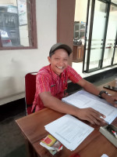

Struktur Pemerintahan Desa

Wagimin
Kepala Desa

Suhadi
Sekretaris Desa

Basirun
Kepala Dusun I

Wahyudi Awan, A.Md
Kepala Dusun II

Runiasih, AKS
Kaur Keuangan

Irwan Mardiyanto
Kaur Umum

Saptono
Kaur Perencanaan

Anggit Widodo, SP.PD
Kasi Pemerintahan

Jurohman
Kasi Pelayanan